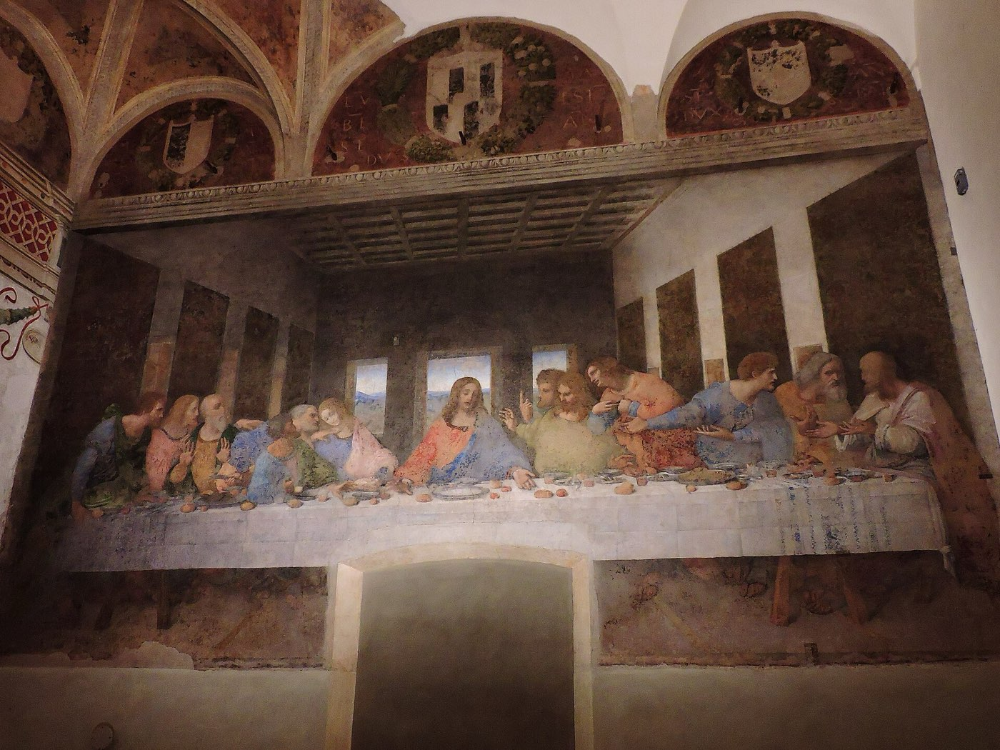
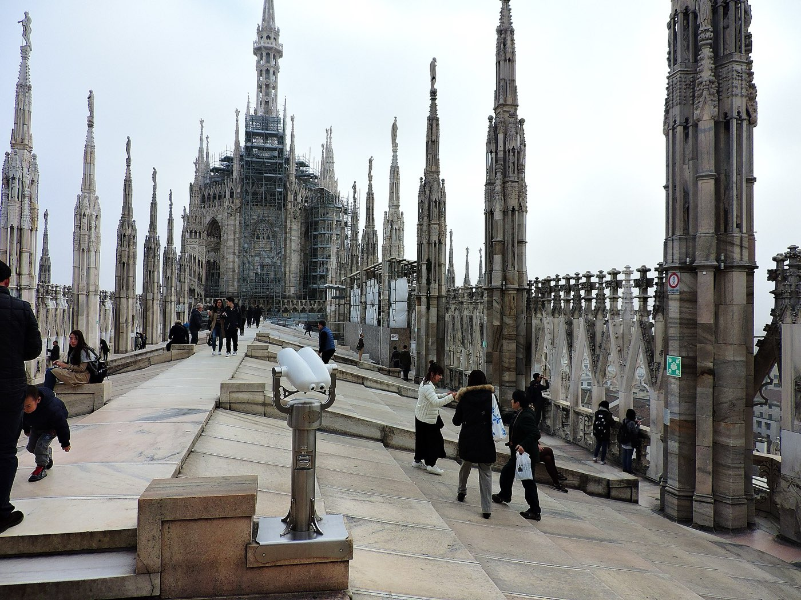

Milan · 3 days
3 Days in Milan: What You Actually Have to See
Milan's must-sees fit comfortably into three days, and only one of them is hard to get into. Leonardo's Last Supper is seen by 40 people at a time for 15 minutes, in a refectory that is shut on Mondays, and the tickets go on sale in quarterly batches that can be gone within hours. Everything else in the city can be booked days ahead or not at all. So the order of this trip starts with a calendar, not a map: find the slot, fix the dates around it, and let the rest of Milan arrange itself around that one quarter of an hour.

Three days is the right length for Milan. The Duomo and its roof, the Last Supper, the Castello Sforzesco, the Pinacoteca di Brera and an evening on the Navigli all fit, with room for the Galleria and a walk through Brera and Porta Nuova. What decides the order is not distance. The centre is flat and compact, the metro is simple, and the Duomo, the Castello and Brera are all a walk from one another. The order comes from a single room.
The refectory of Santa Maria delle Grazie admits 40 people every 15 minutes, Tuesday to Sunday, from 8:15am to a last admission at 6:45pm. It is closed on Mondays. Booking is mandatory for every ticket type, and the official sale opens in blocks roughly three months at a time: the September to December 2026 batch went on sale at noon on 23 June, and peak weekends and summer dates go within hours. Tickets carry your name and are checked against photo ID, so a spare cannot be handed on. Nothing else on the must-see list behaves like this. The Duomo roof sells timed slots too, but not on a quarterly calendar, and the Brera gallery's reservation is a matter of days.
That makes the Last Supper the only fixed point in the trip, and it pins more than a date. Santa Maria delle Grazie is on Corso Magenta, west of the centre, fifteen to twenty minutes on foot from the Castello Sforzesco. So whichever day holds the slot becomes the west-side day, and the Duomo and Brera take the other two. Check availability before booking a flight. If the dates are already fixed and the slot is gone, the section on sold-out tickets below covers the realistic ways back in.
One room, 40 people, 15 minutes. The Last Supper is the only sight in Milan that can decide which days you are there, so look for a slot before fixing anything else. Wherever it lands, that day goes to the west side of the centre around Corso Magenta and the Castello. The Duomo, Brera and the Navigli go on the other two days, in whatever order the weather and the week allow.
Day 1 — The Last Supper slot, then east along Corso Magenta to the Castello
Build this day outward from the slot. Be at Santa Maria delle Grazie half an hour before the time on the ticket: the booking has to be validated at the ticket office against ID, and a late arrival is not moved to the next group. The visit itself is the 15 minutes, spent in a small group behind a series of climate-controlled doors that keep the humidity off the plaster. That is short enough to feel abrupt. It helps to know what to look at before going in. The painting is on the end wall, and Donato da Montorfano's Crucifixion, done in proper fresco and much better preserved, faces it on the opposite wall. Most people forget to turn round.
Walk east from the church along Corso Magenta. San Maurizio al Monastero Maggiore is on the same street, free to enter and closed on Mondays, and it is the surprise of the day: a plain facade on a busy road, and behind it a nave and a nuns' choir painted floor to ceiling with 16th-century frescoes by Bernardino Luini and his circle. It takes twenty minutes and almost nobody coming from the Last Supper knows it is there.
The Castello Sforzesco is a short walk north-east. The courtyards are open daily from early morning into the evening and cost nothing, which is the part to prioritise. Inside, the civic museums take a single ticket and are closed on Mondays. Skip the full circuit. Go straight for Michelangelo's Rondanini Pietà, the sculpture he was still working on in the week he died, then leave through the back of the castle into Parco Sempione and walk its length to the Arco della Pace.
If the slot is in the afternoon, run the day in reverse. Start at the Arco della Pace, work back through the park and the castle, stop at San Maurizio, and finish at the refectory. Brera sits just east of the castle for the evening either way.
The must-sees
One immovable slot and a straight line east from it. With an afternoon slot, walk the same line backwards and end at the church.
Day 2 — The Duomo from the roof down, then south to the Navigli
The Duomo is open every day, which is why it is the day to put on a Monday if the trip includes one. The roof opens at 9am. Take the earliest slot available. The roof is at its emptiest in the first hour and it has no shade at all. The terraces are sold as a timed ticket on their own or combined with the cathedral and museum, and the combined ticket is the one to buy.
Book the stairs. The lift only goes up to the first level of the terraces; the second level, the ridge of the roof, is reached on foot either way, and the way down is always the stairs. The stairs ticket is cheaper and the climb is 251 steps, split into short flights. At the top you walk out onto the sloping marble of the roof itself, among the spires and the statues, with the Madonnina on the main spire overhead.
The dress code is checked at security for the cathedral and the terraces alike: shoulders and legs covered, no hats, no high heels, no luggage. A booked slot does not soften it. A scarf in the bag solves the shoulders and saves the ticket.
Come down and go inside. The nave is vast and dark, and it rewards half an hour more than two. Then walk out through the Galleria Vittorio Emanuele II, which runs straight off the piazza to Piazza della Scala. The arcade is free and always open, and the only thing to do in it is look up at the glass roof. From La Scala, the Quadrilatero della Moda is a few streets north-east, and it is only worth the detour for window shopping on Via Montenapoleone.
In the evening, walk south from the Duomo along Via Torino and Corso di Porta Ticinese, past the Roman columns in front of San Lorenzo, to the canals. Or take metro line M2 to Porta Genova. The bars along the Alzaia Naviglio Grande open for aperitivo from around 6pm and stay busy past midnight. Have the drink on the canal. For dinner, walk a street back from the water.

The must-sees
Everything here is open seven days a week. Roof first, while it is quiet, then down and outward.
Day 3 — The Brera gallery, then north into Porta Nuova
The Pinacoteca di Brera opens Tuesday to Sunday at 8:30am, with last entry at 6pm, and is closed on Mondays. Every visit, including the free first Sunday of the month, needs a reservation through the gallery's own booking site. Unlike the Last Supper, this is a question of days, not months. Book it once the Last Supper slot has fixed which day is free.
Brera is the gallery for Italian painting that Milan actually has, and three hours covers it. Mantegna's Dead Christ, foreshortened from the feet, is hung low and alone in a darkened room. Raphael's Marriage of the Virgin and Piero della Francesca's altarpiece for Federico da Montefeltro are the other two to find. Everything else can be walked past.
Afterwards, walk north out of Brera through Corso Garibaldi to Piazza Gae Aulenti and the Porta Nuova towers. This is the Milan that was built this century, and it needs no ticket: the two Bosco Verticale towers, planted with trees up every balcony, and the Biblioteca degli Alberi park beneath them. Cross the railway into Isola for the late afternoon. It is a residential neighbourhood of small bars and local trattorias, and on most evenings the visitors are outnumbered by people who live there. In the evening, walk back to Corso Como or Brera.
The must-sees
One reservation in the morning, booked days ahead, and nothing ticketed after it.
If the Last Supper is sold out
It often is, especially for weekends and summer dates. There are three honest ways back in.
The first is the weekly top-up. A small number of extra individual tickets are currently released on the official site every Wednesday at noon for the following week. They go fast, so be online at noon Milan time with the account already set up. The free first-Sunday tickets are released the same way, from noon on the Wednesday before.
The second is a guided tour. Licensed operators buy slots in advance and sell them bundled with a guide, at a much higher price than the bare ticket. It is the most reliable route when the official calendar is empty. Book directly with the operator, and never with anyone offering to transfer an existing ticket.
The third is to let it go. The trip in this guide still works without it: move San Maurizio and the Castello to the morning of Day 1 and use the afternoon for the Museo del Novecento beside the Duomo. That is a real loss, but it is not three wasted days. What does not work is buying a named ticket from a private seller. The name is checked against ID at the door.
What to book, and how far ahead
| What | Booking | So |
|---|---|---|
| The Last Supper | Mandatory. Sold in quarterly blocks about three months ahead; extra tickets each Wednesday at noon for the next week | Check this before booking flights, and fix the dates around the slot |
| Duomo terraces | Timed slot, open daily; stairs or lift | Book once the dates are set. Take the first slot of the morning and the stairs |
| Pinacoteca di Brera | Reservation required for every visit, free first Sundays included; closed Mondays | Book once the Last Supper day is known |
| Castello Sforzesco museums | Single ticket on the day; closed Mondays | No need to book. The courtyards are free and open daily |
| San Maurizio, the Galleria, Parco Sempione, the Navigli | Free, no booking | Fill any gap with these |
What three days does not cover
Cutting deliberately beats rushing. These need more time than this trip has:
- Lake Como. Easy to reach by train and genuinely worth it, but it is a full day away, and with the Last Supper fixing one of the three days it costs you either the Duomo or Brera.
- An opera at La Scala. Performances book up far ahead and run on their own calendar. The theatre museum next door is the three-day substitute.
- The Museo del Novecento, the Cimitero Monumentale and the science museum. All good, none essential, and each belongs in a fourth day. The Novecento is the fallback if the Last Supper falls through.
- Venice or Florence as a day trip. Both are reachable by fast train and both deserve their own trip; see 3 days in Venice and 3 days in Florence.
Common questions about 3 days in Milan
Is 3 days enough for Milan?
Yes, for the essentials. Three days covers the Duomo and its roof, the Last Supper, the Castello Sforzesco, the Pinacoteca di Brera, the Galleria, Porta Nuova and an evening on the Navigli. It does not stretch to a Lake Como day trip or a night at La Scala without dropping one of those.
How far in advance do I need to book the Last Supper?
As soon as the official sale for your dates opens. Tickets go on sale in blocks roughly three months at a time; the September to December 2026 block opened on 23 June, and weekends and summer dates can go within hours. Check availability before booking flights, not after.
What can I do if Last Supper tickets are sold out?
Try the weekly release: a small number of extra tickets currently go on sale on the official site every Wednesday at noon for the following week. Failing that, book a guided tour from a licensed operator, which costs more but includes a guaranteed slot. Do not buy a named ticket from a private seller, because it is checked against photo ID at the door.
How long do you get to see the Last Supper?
Fifteen minutes, in a group of up to 40 people. The refectory is open Tuesday to Sunday with last admission at 6:45pm, and closed on Mondays. Arrive around half an hour before your slot to validate the ticket.
Is the Duomo rooftop worth it, and should I take the stairs or the lift?
Yes, it is the one view in Milan that is worth paying for. Take the stairs. The lift only goes to the first level of the terraces, the top level is reached on foot either way, and the descent is always by stairs. The stairs ticket is also cheaper.
What is closed in Milan on Mondays?
The Last Supper, the Pinacoteca di Brera, the Castello Sforzesco's museums and San Maurizio al Monastero Maggiore. The Duomo, its terraces, the castle courtyards, the Galleria and the Navigli all stay open, so a Monday in the trip should be the Duomo day.
Is there a dress code for the Duomo di Milano?
Yes, and it is enforced at security with or without a ticket. Shoulders and legs must be covered, and hats, high heels and luggage are not allowed. The same check applies to the terraces.
Tailored to your trip
Travelling to Milan? Plan your trip around your real arrival and departure times.